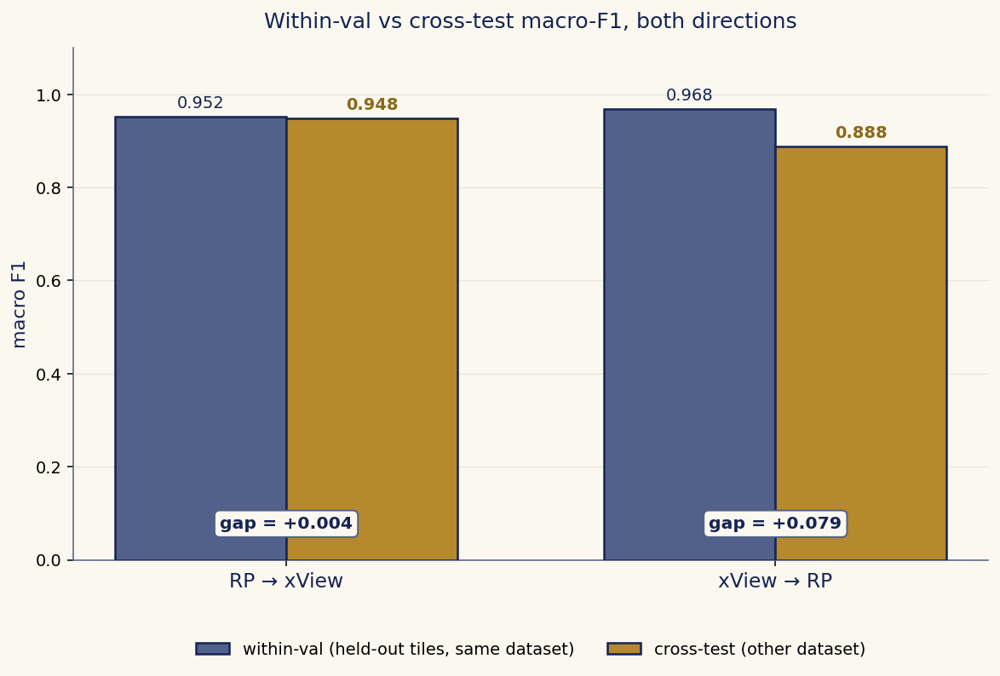
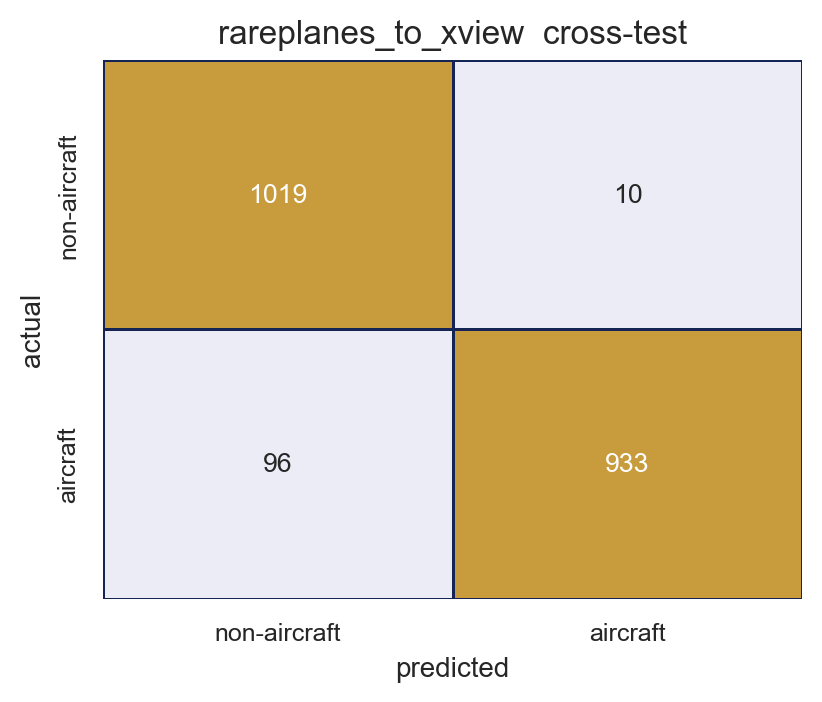
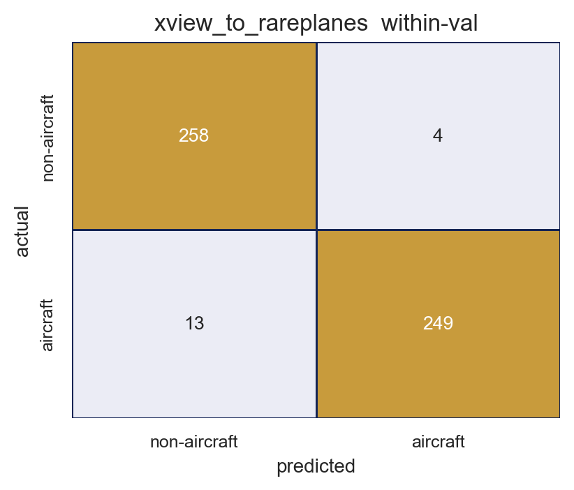
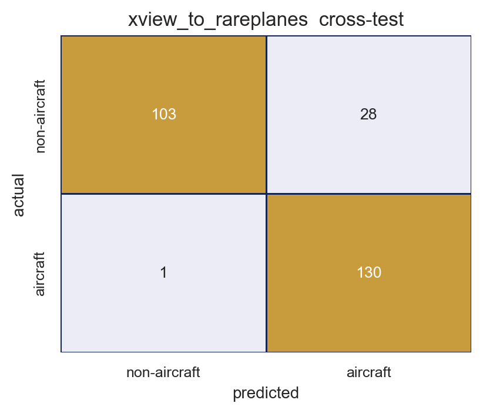
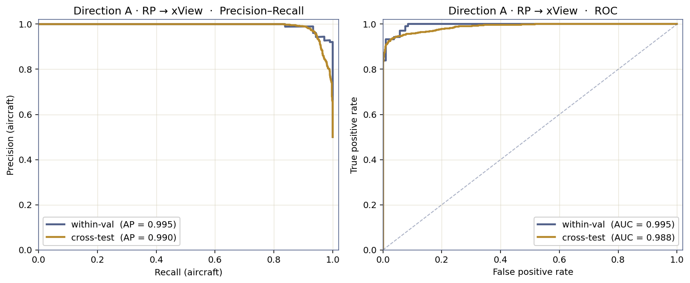
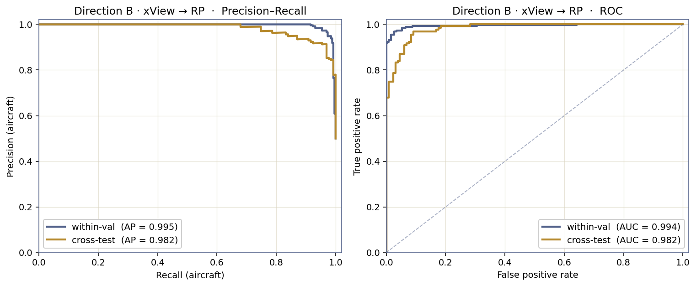
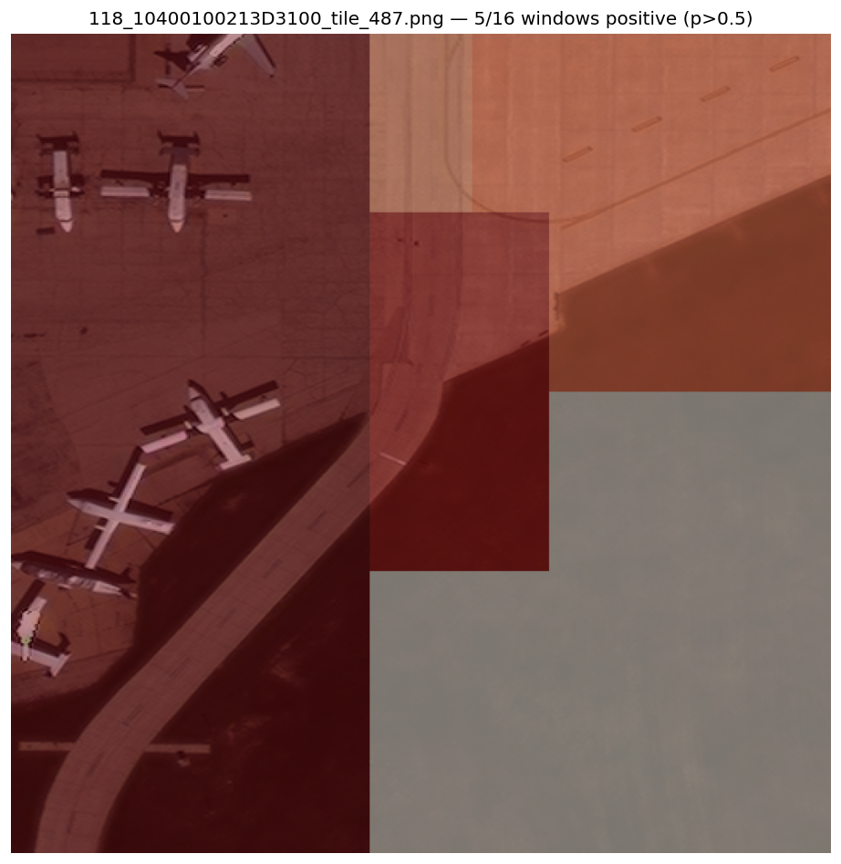

Cross-Dataset Aircraft Classification
on xView and RarePlanes
Bidirectional chip classification, with the generalization gap measured in both directions.
This pipeline answers one question on satellite imagery: does a 224×224 image chip contain an aircraft, yes or no? A ResNet-18 binary classifier is fine-tuned twice, once on xView and once on RarePlanes. Each trained model is then evaluated on held-out tiles of its own dataset (within-val) and on tiles of the other dataset (cross-test). The gap between within-val and cross-test names the domain shift between two datasets that share a Maxar WorldView-3 sensor but were annotated by different teams for different goals.
One ResNet-18 pipeline trained twice (once per dataset) and tested on both. The cross-test gap measures domain transfer.
Problem
Two overhead imagery datasets, same sensor, different annotators. Train on one, test on both, measure the gap.
Both datasets are Maxar WorldView-3 pan-sharpened imagery at ~0.3 m/pixel. Cross-test isolates content + annotation shift, not sensor shift. Task: binary chip classification on 224×224 crops. predict_tile.py wraps the chip classifier with a sliding window for tile-level inference.
Data and inspection
Subset of each dataset (tiles → chips after extraction + validity filter + 1:1 balance), and the three pre-flight checks.
| Direction | Train (tiles → chips) | Within-val (tiles → chips) | Cross-test (tiles → chips) |
|---|---|---|---|
| A · RP → xView | 400 RP → 712 | 100 RP → 210 | 443 xView → 2,058 |
| B · xView → RP | 355 xView → 1,534 | 88 xView → 524 | 200 RP → 262 |
Total training data: 2,246 chips (224×224 RGB), 1:1 positive:negative.
Three checks before training (in sanity.py and verify.py):
- 16 sample chips saved to
figures/sample_chips/for visual inspection. Caught the black-out edge cases that shaped the validity filter. - Overfit test on 100 chips, 15 epochs. Hits 100% training accuracy by epoch 3 (gradients flow, labels consistent).
- Post-run: zero tile leakage between train and within-val. Metric math reconstructed from confusion matrices matches reported values to four decimals.
Preprocessing
Full data path, tile to model-ready tensor. Tensor shapes annotated between stages.
- Shared extractor. xView centroids from
bounds_imcoords. RP centroids from WGS84 polygons via.aux.xmlGeoTransform inversion. One downstream Dataset class. - Asymmetric validity filter (25/10%). Lets aircraft near blacked-out tile edges survive while keeping negatives clean. Verified not a shortcut: mean no-data ratio = 0.0 across all splits.
- 1:1 class balance via truncation. Forces the model to learn aircraft features. Pins majority baseline at F1 = 0.333.
- Train augmentations: HorizontalFlip, VerticalFlip, ColorJitter. No random crops (positives precisely centered).
- ImageNet mean/std normalization. Required by the pretrained backbone.
Model and training
ResNet-18, mostly frozen, trained with sane defaults.
- Backbone: ResNet-18 pretrained on ImageNet. Lightweight, well-benchmarked, trains in 3–7 min on Apple Silicon MPS.
- Frozen vs trainable: Layers 1–3 frozen (low-level features transfer). Layer 4 + new 2-layer head (512→128→2, ReLU + Dropout 0.3) trained. 8.46M trainable params out of 11.2M.
- BatchNorm in eval() during training. Frozen-backbone fine-tunes that leave BN in train mode silently corrupt pretrained features as running stats drift toward the new input distribution.
freeze_batchnormutility resets BN to eval after everymodel.train(). - Optimizer: AdamW (lr=3e-4, wd=1e-4) + cosine annealing, 6 epochs, batch 64. Defaults, no tuning.
# src/model.py
def freeze_batchnorm(model):
for module in model.modules():
if isinstance(module, (nn.BatchNorm1d, nn.BatchNorm2d, nn.BatchNorm3d)):
module.eval()Evaluation
Three-way split at the tile level (no chip leakage). Macro-F1 headline. Majority-class baseline reported alongside every result.
- Train: 80% of source tiles.
- Within-val: 20% of source tiles. In-distribution fit.
- Cross-test: all of the other dataset. Out-of-distribution transfer.
- Metrics: macro-F1, accuracy, macro precision/recall, per-class F1/precision/recall, confusion matrix, PR-AUC, ROC-AUC, majority-class baseline.
Results
Direction A (RP-trained) transfers to xView essentially without a gap. Direction B (xView-trained) takes a visible hit on RarePlanes, but the failure modes are mirror images.
About "baseline 0.333": Every test set is balanced 1:1 positive:negative. A "dumbest possible" model that always guesses the same class regardless of input would score macro-F1 = 0.333 on such a set. That is the floor every real model has to clear. Both trained models clear it by +0.55 to +0.62 F1, which is what makes their numbers meaningful.
| Direction | Train chips | Within-val F1 | Cross-test F1 | Gap | Cross-test N |
|---|---|---|---|---|---|
| RP → xView | 712 | 0.952 | 0.948 | +0.004 | 2,058 |
| xView → RP | 1,534 | 0.968 | 0.888 | +0.079 | 262 |

Detailed metrics, every split
Per-class precision/recall + PR-AUC + ROC-AUC alongside everything results.json reports.
| Metric | A · within-val | A · cross-test | B · within-val | B · cross-test |
|---|---|---|---|---|
| Macro F1 | 0.952 | 0.948 | 0.968 | 0.888 |
| Accuracy | 0.952 | 0.948 | 0.968 | 0.889 |
| Aircraft precision | 0.936 | 0.989 | 0.984 | 0.823 |
| Aircraft recall | 0.971 | 0.907 | 0.950 | 0.992 |
| Not-aircraft precision | 0.970 | 0.914 | 0.952 | 0.990 |
| Not-aircraft recall | 0.933 | 0.990 | 0.985 | 0.786 |
| PR-AUC (aircraft) | 0.995 | 0.990 | 0.995 | 0.982 |
| ROC-AUC (aircraft) | 0.995 | 0.988 | 0.994 | 0.982 |
| N samples | 210 | 2,058 | 524 | 262 |
Two patterns jump off the table. Direction A cross-test: aircraft precision 0.989, recall 0.907. Conservative. Direction B cross-test: aircraft recall 0.992, precision 0.823. Permissive.
Confusion matrices



PR and ROC curves


What I conclude
- Narrow training can still transfer. Direction A's +0.004 gap shows RP's airport-only aircraft features generalize to xView's broader contexts.
- Broad training is recall-heavy. Direction B catches 99% of RP aircraft but fires on confusable backgrounds.
- The gap is a data-curation question, not a modeling one. Both directions produce strong within-val numbers. The cross-test gap maps cleanly onto each dataset's "not-aircraft" definition.
- Cross-dataset eval reveals what within-dataset eval hides. Either model would look excellent on its own held-out data alone.
Inference at tile scale
predict_tile.py slides a 224×224 window across a whole tile and outputs a per-window aircraft heatmap. Bridges chip classification to "is there an aircraft in this tile?"

Code organization
Library code in src/. Entry-point scripts at top level. Auxiliary scripts in scripts/. Configs in YAML.
| Path | Role |
|---|---|
run.sh | One-command wrapper (venv + deps + pipeline) |
run.py | Pipeline entry point, both directions |
predict.py · predict_tile.py | Inference: chip-level and tile sliding-window |
configs/*.yaml | Per-direction hyperparameters |
src/data.py | Chip extraction (both datasets) + validity filter + PyTorch Dataset |
src/model.py | ResNet-18 + BN-freeze utility |
src/train.py | AdamW + cosine annealing |
src/eval.py | Metrics + confusion plot + comparison bar |
scripts/sanity.py · scripts/verify.py | Pre-flight (sample + overfit) and post-run (leakage + metric-math) checks |
scripts/plot_curves.py · scripts/chip_strip.py | Auxiliary plot generators |
Reproducibility
Single command end to end. ./run.sh creates a virtual environment, installs pinned dependencies, runs both directions, writes results.json + figures + saved model weights. Seed 42 throughout (Python, numpy, torch). predict.py and predict_tile.py run the saved models against arbitrary images.